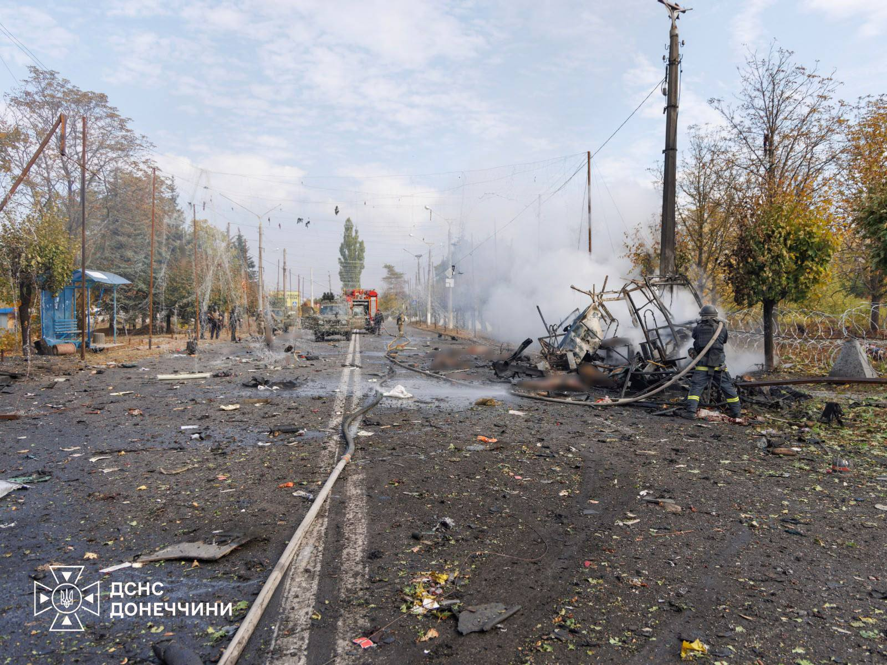
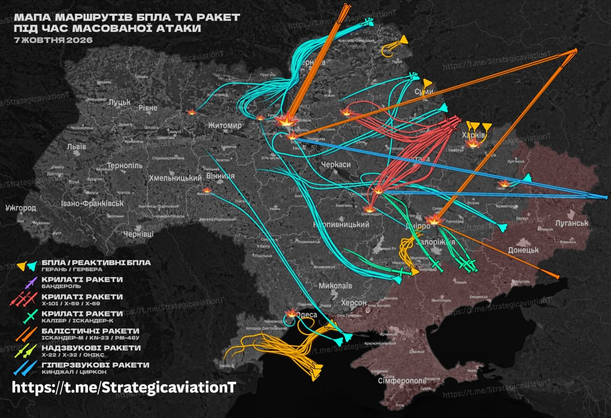

Kyiv and selected Ukrainian critical infrastructure damage
Confirmed, operator-reported, or attributed reports, September 26–October 8, 2026
Last updated: 8 October 2026, 16:55 Kyiv time
LATEST ATTACK / OCTOBER 8

By Thursday morning, the big combined Russian air assault of Oct. 7 had, for all practical purposes, moved into the aftermath. The news of the day is different: jet-powered attack UAVs — including aircraft identified in circulating reports as Geran-5s — falling out of the sky over Kyiv and elsewhere, the mounting toll from the strike on Pryluky, and a new mass-casualty attack on Kramatorsk.
In Pryluky, Chernihiv region, the State Emergency Service reported 22 people killed, including five children, and 54 injured. Search-and-rescue crews worked through the night and were continuing to clear rubble and dismantle destroyed structures on Thursday morning. Fifteen people, including one child, were rescued during the operation.
In Kramatorsk, Donetsk Regional Military Administration head Vadym Filashkin ordered the Kramatorsk and Sloviansk city military administrations to suspend public transport because of the sharply deteriorating security situation. He said the strike had killed more than two dozen people and wounded 18. The State Emergency Service later reported 33 killed and 18 wounded. Two passenger buses and an apartment building were damaged.
In Kyiv, the most striking visual evidence so far is the video from the Nova Angliya residential complex showing what appears to be a downed jet-powered UAV falling into the built-up area. The footage does not establish the precise point of impact or the aircraft type. The Air Force reported that 46 jet-powered UAVs were used in the overnight attack.
Kyiv also continued to deal with the direct consequences of the overnight strikes. In the Solomiansky district, a UAV strike on a four-storey shop building was subsequently reported by Kyiv Mayor Vitali Klitschko to have killed two people and injured two. Emergency power outages were introduced at 09:46 on the order of Ukrenergo, and Kyiv authorities later reported reduced pressure in the city's water-supply network. Kyiv police also reported that two more unexploded ballistic missiles used in the attack had been neutralized.
The latest Kyiv air-raid alert ended at 12:26 after lasting 3 hours 12 minutes, according to the alerts.in.ua record supplied for this update. Three completed alerts have so far been recorded in Kyiv on Oct. 8, lasting 1 hour 55 minutes, 50 minutes and 3 hours 12 minutes — a combined 5 hours 57 minutes. A new alert was announced at 13:04 and remains active.
The Oct. 7–8 combined attack was national in scale. According to the Ukrainian Air Force, the enemy used 5 ballistic missiles, 48 cruise missiles and 130 strike UAVs, including 46 jet-powered UAVs. The main directions of attack were Kyiv, Kharkiv, Poltava and Dnipropetrovsk regions.
The Air Force said 161 targets were shot down or suppressed: 39 of 48 cruise missiles and 117 of 130 UAVs, including 36 of the 46 jet-powered UAVs. Information on six cruise missiles was still being clarified. Impacts by missiles and strike UAVs were recorded at 18 locations, with debris from intercepted targets falling at five locations.
In Kyiv, impacts and damage were reported in four districts, including non-residential buildings and warehouse facilities. In Kremenchuk district, the attack hit several energy-sector enterprises, causing fires, significant equipment damage and disruption to heat and water supplies in parts of Kremenchuk and Horishni Plavni.
On the evening of Oct. 7, another Russian UAV struck a 12-storey residential building in Kyiv's Desniansky district at the level of the 10th floor. The State Emergency Service initially said four people were injured, including two children, and 22 residents, including eight children, were rescued. By 06:29 on Oct. 8, the State Emergency Service reported that two people had died. Fire spread to upper floors and part of the structure was damaged. The fire covered about 100 square metres.
After midnight, Kyiv recorded further air-raid activity. The city administration reported air-defence activity over Obolon, followed by another alert. During the latter alert, Kyiv Mayor Vitali Klitschko reported explosions, a ballistic threat, a fire at a non-residential building in Shevchenkivsky district, damage to windows and smoke in a residential building, and damage to glass elements at the entrance to Lukianivska metro station. The station was temporarily closed to entry and exit, with trains passing without stopping.
This page remains a working chronology of infrastructure damage and significant related developments in Kyiv and elsewhere in Ukraine.

VIDEO EVIDENCE / NOVA ANGLIYA
Geolocation: 50.394872, 30.474606. Approximate scene area identified by matching the mural-covered residential block and the low building with the pitched roof visible in the video against Google imagery. The coordinates mark the apparent scene area, not a confirmed impact point or filming position. Exact impact location remains uncertain.
KYIV / AIR RAID STATUS
Latest alert — active from 13:04, October 8. Duration unknown
Oct. 8 alerts — 02:29–04:24, 07:40–08:30, 09:14–12:26 and 13:04–present. Completed alerts: 5 hours 57 minutes
Previous alert — 02:54–03:46, October 8. Drone threat · 52 minutes
KYIV / SERVICE STATUS
Power — emergency power outages were introduced in Kyiv at 09:46 on Oct. 8 by order of Ukrenergo. The measure followed the overnight attack and damage to the power system. Emergency outages are subject to change as the system is stabilized
Water — Kyiv authorities reported reduced pressure in the city water-supply network at 10:47. Service impact and restoration status remained subject to change
Heat — no new Oct. 7 citywide service-status disruption found. Current service status not independently established
Metro — the green line is operating with changes after the night attack. Trains run between Syrets and Vydubychi and between Osokorky and Chervonyi Khutir. Damage to fencing was found on the open section. Lukianivska station was later temporarily closed after the early Oct. 8 attack, with trains passing without stopping. Service remains subject to air-raid restrictions
Bridges — the damaged section of North Bridge was repaired on Oct. 6. South Bridge remains closed to road traffic and metro following earlier attacks. Current traffic restrictions remain an open thread
Rail — no current Oct. 7 disruption independently established. Current status not checked
KYIV / OCTOBER
October 1–8, 2026 · running month-to-date tally · latest alert ongoing
| Date | Facility | What happened |
|---|---|---|
| Oct. 8 | Kyiv, Solomiansky district / shop building | officially reported Kyiv Mayor Vitali Klitschko later reported that two people were killed and two injured in the UAV strike on the four-storey shop building first reported at 11:32. Source: Vitali Klitschko, Telegram. |
| Oct. 8 | Kyiv, Solomiansky district / shop building | officially reported At 11:32 Kyiv time, Kyiv Mayor Vitali Klitschko reported a UAV strike on a four-storey shop building in Solomiansky district. Emergency services were heading to the site. No casualty figure was given in that report. Source: Vitali Klitschko, Telegram. |
| Oct. 8 | Kyiv / unexploded ballistic missiles | officially reported Kyiv police reported that two more unexploded ballistic missiles used in the attack on the capital had been neutralized. Source: Kyiv Police, official reporting. |
| Oct. 8 | Kyiv water-supply network | officially reported At 10:47 Kyiv authorities reported reduced pressure in the city's water-supply network following the attack and resulting power-system disruption. |
| Oct. 8 | Kyiv power supply | operator-reported Emergency power outages were introduced in Kyiv at 09:46 by order of Ukrenergo following the attack on the power system. Source: Ukrenergo, official Telegram. |
| Oct. 8 | Kyiv / multiple locations | attributed report At 11:36 Kyiv time, the local Real Kyiv channel reported that smoke was visible from different parts of the city and that a fire was developing. The report did not identify locations or establish whether the fires were related to the earlier incidents. Source: Real Kyiv, Telegram. |
| Oct. 8 | Kyiv / citywide casualties | officially reported At 10:52 Kyiv time, Kyiv Mayor Vitali Klitschko reported that, since the start of the day on Oct. 8, one person had been killed in Kyiv as a result of Russian attacks. Eleven city residents were injured, and medics hospitalized nine of the injured. Source: Vitali Klitschko, Telegram. |
| Oct. 8 | Kramatorsk / Donetsk region | officially reported Donetsk Regional Military Administration head Vadym Filashkin later reported 30 people killed and 18 wounded in the strike. He ordered the Kramatorsk and Sloviansk city military administrations to suspend public transport because of the deteriorating security situation. |
| Oct. 8 | Kyiv, Holosiivsky district | officially reported At 09:31 Kyiv time, Kyiv Mayor Vitali Klitschko reported that drone debris had fallen on an open area in Holosiivsky district. Medics were called, and emergency services were heading to the scene. Source: Vitali Klitschko, Telegram. |
| Oct. 8 | Kyiv / air-raid alert | eyewitness / official alert A new air-raid alert was active in Kyiv at 09:18 Kyiv time. During the alert, abdymok reported hearing anti-aircraft booms. The location and cause of the individual sounds are not independently established in this entry. Source: Telegram report supplied by abdymok. |
| Oct. 7–8 | Ukrainian power system | operator-reported Ukrenergo said on Oct. 7 that electricity restrictions for industry and households would continue on Oct. 8 in several regions from 00:00 to 23:59. Household hourly outage schedules would cover 0.5–1.5 queues out of six possible. The company attributed the restrictions to damage to the power system from mass Russian attacks. Ukrenergo said planned outages on Oct. 7 included Poltava, Cherkasy, Chernihiv, Kharkiv and Kyiv regions and Kyiv city. Those schedules had initially been announced at up to one queue, with another 0.5 queue added on the morning of Oct. 7. The restrictions mean an average of about 4–5 hours without electricity per day. Source: Ukrenergo, official Telegram |
| Oct. 8 | Kyiv, Lukianivska metro station / Shevchenkivsky district | officially reported During an early-morning Russian attack, Kyiv Mayor Vitali Klitschko reported a fire at a non-residential building in Shevchenkivsky district. He later reported that windows had been blown out and there was smoke in the entrance of a residential building, and that glass elements at the entrance to Lukianivska metro station had been damaged. The station was temporarily closed to entry and exit, with trains passing without stopping. |
| Oct. 7–8 | Kyiv, Desniansky district / residential building | confirmed by officials A Russian UAV struck a 12-storey residential building at the level of the 10th floor late on Oct. 7. Fire spread to upper floors and part of the structure was damaged. The State Emergency Service initially reported four injured, including two children, and 22 residents, including eight children, rescued. By 06:29 on Oct. 8, the State Emergency Service reported two deaths. |
| Oct. 7 | Kyiv / electricity and electric transport | officially reported DTEK said emergency electricity shutdowns were introduced in Kyiv and Kyiv region on the instruction of Ukrenergo. DTEK said scheduled outage timetables did not apply during the emergency shutdowns. DTEK later reported that emergency outages were cancelled in Kyiv region and on Kyiv’s right bank except Holosiivsky and Pechersk districts. DTEK said scheduled outage timetables did not apply during the emergency shutdowns. Kyiv City Administration reported that electric transport on the right bank was temporarily suspended because of a loss of voltage in the overhead contact network. Electric transport continued operating in Obolon and Vynohradar. The funicular was also temporarily suspended because of the loss of electricity supply. |
| Oct. 7 | Kyiv / water supply | officially reported Following an emergency situation in the city power system, water pressure on the right bank was reduced to a minimum. Kyiv City Administration said Kyivvodokanal was restoring pressure as power was restored. At 18:50, the city said power restoration on the right bank was under way and Kyivvodokanal was normalizing pressure, with full water supply expected within 2–3 hours. |
| Oct. 7 | Kyiv, Solomiansky district | officially reported A fire broke out in a five-storey residential building after the Russian attack, affecting the first through third floors. Emergency crews rescued 12 people from the upper floors. Seven people were injured at the building, one of whom was hospitalized. At another address in the district, one person was injured, with no fire or destruction reported. The updated citywide casualty count was eight injured. The sequence followed earlier reports from Kyiv Mayor Vitali Klitschko of fires and injuries in the district during the 16:28–17:42 drone alert. |
| Oct. 7 | Kyiv, Sviatoshynsky district | officially reported The roof of a four-storey administrative building was partially destroyed during the Russian attack. No fire was reported. |
| Oct. 7 | Kyiv, Obolon / Minskyi massif | video evidence / local Telegram report A local Kyiv Telegram channel reported a UAV over Obolon / Minskyi massif, followed by an explosion. The accompanying video appears to show a drone striking the roof of a structure and exploding on impact. The video supports the occurrence of a roof-level impact but does not independently establish the precise address, identity of the structure, weapon type, or resulting casualties or damage beyond what is visible in the footage. Source: Obolon INFO, local Telegram channel; video supplied with the report. |
| Oct. 7 | Kyiv — eyewitness report | eyewitness Multiple explosions and what sounded like anti-aircraft fire were heard in Kyiv during the 16:28–17:42 drone alert. This is a firsthand report by abdymok. The nature and locations of the explosions and firing are not independently established in this entry. |
| Oct. 7 | Kyiv, four districts | officially reported Impacts and damage were reported in Obolonsky, Podilsky, Darnytsky and Shevchenkivsky districts. Obolonsky: impact on non-residential development. Podilsky: warehouse facilities were hit and damaged. Darnytsky: debris fell in an open area. Shevchenkivsky: impact on non-residential development. According to Kyiv Mayor Vitali Klitschko, at least two people were killed in the Darnytsky district. Source: Vitali Klitschko, Telegram. |
| Oct. 7 | Pryluky, Chernihiv region | officially reported / evidence video A Russian missile strike hit a five-storey residential building in Pryluky during the overnight mass attack, destroying part of the building. Chernihiv Regional Military Administration head Vyacheslav Chaus had reported 14 people killed, including four children, and more than 50 injured. Chernihiv regional police later put the toll at 16 killed, including four children, and 55 injured, including seven children. The latest update puts the toll at 22 killed, including five children, and 54 injured, including seven children. The search-and-rescue operation is still continuing. Police said 15 apartment buildings and 16 private houses were damaged. The Ukrainian Air Force had reported cruise missiles in the Pryluky area during the attack. VIDEO — missile impact on the residential building. The video is retained here as documentary evidence of the strike and is not used to infer the missile's precise type beyond the official reporting of cruise-missile activity in the area. Sources: Vyacheslav Chaus, head of Chernihiv Regional Military Administration, Telegram, Oct. 7, 2026; Chernihiv regional police, update at 15:00, Oct. 7, 2026. |
| Oct. 7 | Kyiv, ATЛ central warehouse hub | company-reported ATЛ said the main warehouse facility of its Kyiv operation was completely destroyed in the mass Russian attack. The company described the site as its central hub for the main volumes of oils, batteries and automotive goods. ATЛ said all of its auto shops and service centers remained fully supplied while the extent of the destruction was being assessed. The company did not identify the facility's address in its statement, so this chronology does not infer a precise location. Sources: ATЛ statement, relayed by Operativno ZSU; ATЛ |
| Oct. 7 | DTEK Dnipro Grids, Dnipropetrovsk region | company-reported An FPV drone fell at the entrance to a DTEK Dnipro Grids field site in a frontline district of Dnipropetrovsk region and detonated, the company said. DTEK said no employees were injured and described it as the ninth attack on the site since the beginning of September. The company did not identify the precise location of the site in its statement. Source: DTEK official Telegram channel |
| Oct. 7 | Kremenchuk, Poltava region | officially reported A mass combined Russian attack hit several energy-sector enterprises in Kremenchuk district. Direct strikes and falling debris caused fires and significant damage to technical equipment. The attack also disrupted heat and water supplies in parts of Kremenchuk and Horishni Plavni, with some facilities temporarily powered by generators. One person was reported injured. |
| Oct. 6 | Paton Bridge / structural condition | petition, expert warnings A Kyiv City Council petition calling for major repairs and restoration of the Paton Bridge had received about 1,000 of the 6,000 votes required for consideration as of Oct. 6. The petition cites deterioration of the bridge's load-bearing structures and calls for immediate anti-emergency and restoration work. It follows repeated expert warnings about the bridge's condition. On Feb. 25, First Vice President of the National Academy of Sciences Vyacheslav Bohdanov said specialists had serious concerns about its technical condition and that scientists assessed the structure's residual life as zero. A Kyiv City State Administration statement on March 5 said the bridge could still be used, subject to previously imposed traffic restrictions. Source: Interfax-Ukraine |
| Oct. 6 | Obolon district educational institution | confirmed by officials Debris from an intercepted Russian UAV struck the roof of an educational institution in Kyiv's Obolon district early on Oct. 6, starting a fire. Emergency crews responded at the scene. No casualties were reported in the initial city administration account. |
| Oct. 5 | Pechersk residential courtyard | confirmed by officials Debris from a Russian UAV fell in the courtyard of a multi-storey residential building in Pechersk after Ukrainian air defenses intercepted the drone. Two parked passenger cars burned and a third was damaged. No deaths or injuries were reported. The Air Force had separately reported a jet-powered UAV over Kyiv that evening. The authorities did not publicly identify the street or building, so this chronology does not infer a precise address. |
| Oct. 5 | Kyiv airspace / jet-powered UAV | official reporting The Air Force reported a jet-powered UAV over Kyiv during the evening attack. This is recorded here because the same period saw debris damage in Pechersk and follows the documented use of jet-powered drones against Kyiv's bridge network. The entry does not infer that the Pechersk debris and the bridge strikes involved the same individual aircraft. |
| Oct. 4–5 | Kyiv bridges / anti-drone defence | official statements On Oct. 4, President Volodymyr Zelenskyy said more than 12 automated .50-calibre anti-drone turrets had been installed in Kyiv, with another eight planned for Kyiv Oblast. On Oct. 5, Air Force spokesman Yuriy Ihnat said such robotic turrets were also being installed on bridges and had already intercepted jet-powered UAVs.The SBU separately urged the public not to photograph or publish material showing air-defense operations, military objects or attacks on critical infrastructure, warning that such material can be monitored and analyzed by Russian forces. |
| Oct. 4 | Desniansky district heat main | confirmed by officials A Russian attack damaged a heating main in Kyiv's Desniansky district, temporarily interrupting hot-water supply. Kyiv Mayor Vitali Klitschko said repair crews were working to restore service. |
| Oct. 4 | North Bridge (Pivnichnyi) | confirmed by officials A Russian drone struck the North (Pivnichnyi) Bridge again on the morning of Oct. 4, damaging the road surface, according to Kyiv Mayor Vitali Klitschko and the Kyiv city administration. Two people were injured, one hospitalized and one treated at the scene. President Volodymyr Zelenskyy later published video showing the strike. VIDEO — firsthand view (Google Drive) VIDEO — second view (Google Drive). The firsthand videos are retained as documentation from the scene. |
| Oct. 3 | North (Pivnichnyi) Bridge | confirmed by officials A Russian drone struck the North (Pivnichnyi) Bridge in Kyiv at about 6:57 a.m., according to Kyiv Mayor Vitali Klitschko and the Kyiv city administration. The road surface and trolleybus overhead contact network were damaged. Transport detailsTraffic from the left bank to the right bank was initially closed, delaying buses 21, 73, 101 and 114 and trolleybuses 29, 30, 31 and 47. Bus service was later restored on adjusted routes, while replacement trolleybus services were organized on both banks. Repair work on the damaged contact network continued. |
| Oct. 2 | South Bridge / Kyiv bridge network | confirmed by officials At about 5 a.m., a Russian UAV struck the South (Pivdennyi) Bridge again — the fourth reported hit in two days. Kyiv Mayor Vitali Klitschko said emergency services were heading to the site. The Kyiv City Military Administration later reported that the South Bridge was fully closed to traffic in both directions. Traffic restrictionsPolice reported partial restriction to one lane on Metro Bridge from the left bank toward the right bank, and a complete restriction on Paton Bridge for traffic from the right bank toward the left bank. |
| Oct. 3 | Kyiv bridge traffic rules | confirmed by officials The Kyiv city administration revised alert-time traffic rules: South Bridge traffic from the left bank to the right bank is unrestricted during an alert, while right-to-left traffic is restricted for 15 minutes after the alert begins, then resumes. Podilsko-Voskresensky Bridge traffic stops in both directions for 15 minutes when an alert begins or ends, then resumes in full. North, Darnytsky and Paton bridges, and Metro Bridge, operate without alert-related restrictions. |
| Oct. 2 | Holosiivsky district | confirmed by officials Debris fell in Holosiivsky district, damaging windows in a non-residential building and several cars. No fire or casualties were initially reported there. |
| Oct. 2 | Ukrainian energy facilities — several regions | official claim According to Ukraine's Ministry of Energy, some consumers were temporarily without electricity in Donetsk, Dnipropetrovsk, Zaporizhia, Mykolaiv, Kharkiv and Chernihiv oblasts as a result of hostilities and Russian shelling of energy infrastructure on the morning of Oct. 2. Emergency restoration work was under way where security conditions allowed. The ministry did not publicly identify individual generating plants or substations in this update, so no specific facility is named here. |
| Oct. 1 | South Bridge / Green Line metro | confirmed by officials Russian drones struck the South (Pivdennyi) Bridge area repeatedly. Two impacts were reported near the support structure, followed later by a strike on the roadway. The Kyiv City Military Administration reported damage to a bridge support, crash barrier, roadway and metro fence. Inspection and transport detailsMetro and surface transport across the bridge were halted during inspections. Surface public transport later resumed, while metro-related inspections continued. Initial reporting said specialists found no critical structural damage in the preliminary inspection; this did not establish the status after the further strike or the renewed attack on Oct. 2. |
| Sept. 30 | Institute for Nuclear Research | confirmed by officials A Russian UAV struck the grounds of the Institute for Nuclear Research of the National Academy of Sciences in Kyiv at 18:18 on Sept. 30, according to Ukraine's State Nuclear Regulatory Inspectorate. A fire broke out, but the VVR-M research reactor and safety-important systems were not damaged, according to Ukraine's State Nuclear Regulatory Inspectorate. Radiation readings and reactor status are detailed in the nuclear and scientific infrastructure section below. |
| Sept. 30 | Kyiv energy infrastructure | official claim President Volodymyr Zelenskyy said critical infrastructure was hit in five regions, while Prime Minister Serhiy Koretsky described the attack as a massive escalation against Ukraine's energy infrastructure. Ukrenergo said it imposed emergency power cuts in Kyiv and three surrounding regions. The attack caused power outages and disrupted other critical services in the capital. The full extent of damage to individual Kyiv generation facilities was not publicly identified. Source: Reuters |
Kyiv air-alert status
ended Oct. 8 — the latest Kyiv alert ran from 09:14 to 12:26, lasting 3 hours 12 minutes. Two earlier alerts ran from 02:29 to 04:24 and 07:40 to 08:30. The three Oct. 8 alerts totalled 5 hours 57 minutes.
Oct. 8 alerts: 02:29–04:24, 07:40–08:30, 09:14–12:26 and 13:04–present. The latest alert is ongoing. The duration of the current interval is unknown.
Open threads
Desniansky heat main — restoration status to be checked.
Casualty reconciliation — reconcile the Oct. 8 citywide count with the State Emergency Service toll reported for the Oct. 7 Desniansky strike.
South Bridge — current structural and traffic status to be checked.
North Bridge — current traffic and repair status to be checked.
Paton Bridge — restrictions and structural assessment remain open.
Institute for Nuclear Research — follow-up on site condition remains open.
Nuclear and scientific infrastructure
Sept. 30 — Institute for Nuclear Research, Kyiv. A Russian UAV struck the grounds of the National Academy of Sciences' Institute for Nuclear Research, where the VVR-M research reactor is located. The State Nuclear Regulatory Inspectorate reported a fire but no damage to the reactor or safety-important systems, and no change in radiation levels; readings remained within the natural-background range of 0.16–0.20 μSv/h. The reactor has been shut down with its core fully unloaded since February 2022.
Sept. 28 — National Academy of Sciences Presidium, Kyiv. A Russian drone struck the building of the NAS Presidium, causing significant damage and killing two people, according to Ukraine's Ministry of Foreign Affairs. The MFA subsequently described the Institute for Nuclear Research strike as part of a wider pattern of attacks affecting Ukrainian nuclear and scientific institutions.
Earlier damage — Kharkiv Institute of Physics and Technology. The MFA notes that Russian forces repeatedly shelled the National Scientific Center "Kharkiv Institute of Physics and Technology" in 2022, damaging infrastructure of its Neutron Source nuclear facility.
Sources: State Nuclear Regulatory Inspectorate of Ukraine; Ministry of Foreign Affairs of Ukraine.
Updates
Oct. 8, 2026 — 13:37 Kyiv time: moved the Kramatorsk strike to the top update with a State Emergency Service photograph; revised the immediate casualty wording to “more than two dozen killed” while retaining the later official toll of 33 killed and 18 wounded; recorded the latest Kyiv air-alert interval as 13:03–13:15, according to alerts.in.ua.
Oct. 8, 2026 — 12:00 Kyiv time: added the 11:32 Solomiansky district report of a UAV strike on a four-storey shop building, an 11:36 attributed report of smoke visible from multiple parts of Kyiv, the Kramatorsk casualty report current at 11:00, and the continuing Kyiv air-raid alert.
Oct. 8, 2026 — 10:52 Kyiv time: added Kyiv Mayor Vitali Klitschko's 09:31 report of drone debris falling on an open area in Holosiivsky district and his 10:52 citywide casualty update: one killed, 11 injured, nine hospitalized.
Oct. 8, 2026 — 10:00 Kyiv time: added the new Kyiv air-raid alert, bringing the running October count to 56, and recorded a firsthand report of anti-aircraft booms. The alert was ongoing at the time of update.
Earlier on Oct. 8: updated the latest completed Kyiv air-raid alert to 04:07–05:07 and the running count to 55. Updated the late-evening Oct. 7 UAV strike on a Desniansky district residential building: the initial four-injured report was superseded by a State Emergency Service update reporting two deaths. The earlier rescue total of 22 residents remains recorded. Added the early Oct. 8 attack affecting a non-residential building, a residential building and Lukianivska metro station.
Oct. 7, 2026: corrected the 16:28 Kyiv drone alert to 16:28–17:42, recorded the new 18:01 Kyiv drone alert, and recorded a firsthand eyewitness report of multiple explosions and what sounded like anti-aircraft fire during the alert. Added a local Telegram report and accompanying video showing an apparent UAV roof impact and explosion in the Obolon / Minskyi massif area, with location and consequences not independently established. Updated the Pryluky casualty toll: 22 killed, including five children, and 54 injured, including seven children. The search-and-rescue operation remains ongoing. Updated the Solomiansky district casualty and rescue report: eight injured citywide, including seven at the five-storey residential building, 12 people rescued from upper floors, and one additional injured person at another address. Added partial roof destruction at a four-storey administrative building in Sviatoshynsky district. The October running alert count is 51. Added Ukrenergo's Oct. 7 announcement that hourly outage schedules will apply in several regions on Oct. 8 for the full day, subject to change.
Working chronology, newest first. Compiled by abdymok. This page tracks attacks and damage affecting Kyiv's transport, energy-generation and other critical physical infrastructure, with selected Ukrainian regional and scientific-infrastructure entries included where they materially document the same attack pattern. Individual facilities are listed only where a strike, damage, or official/credible attribution can be documented. Reported weapon types, impact locations and casualty information remain provisional where authorities have not confirmed them.